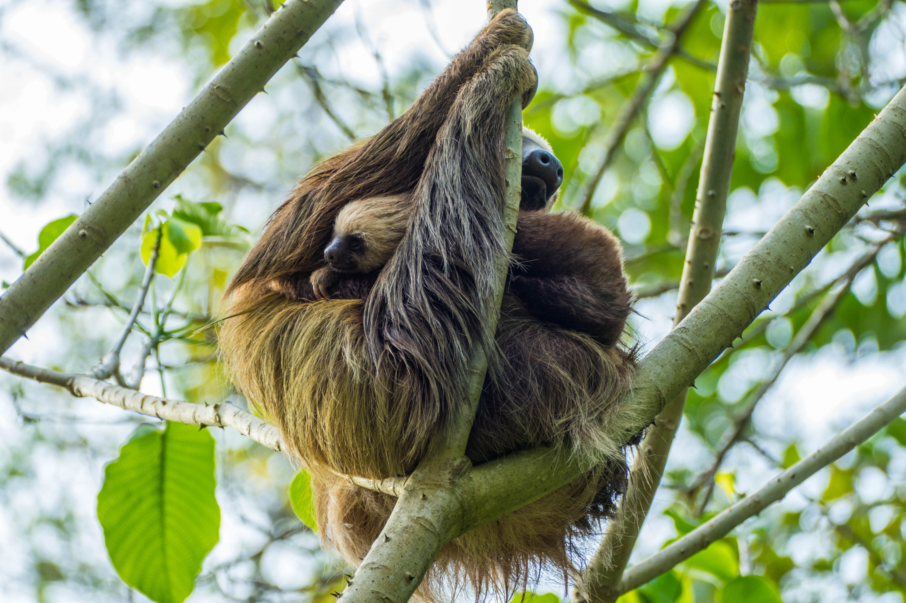
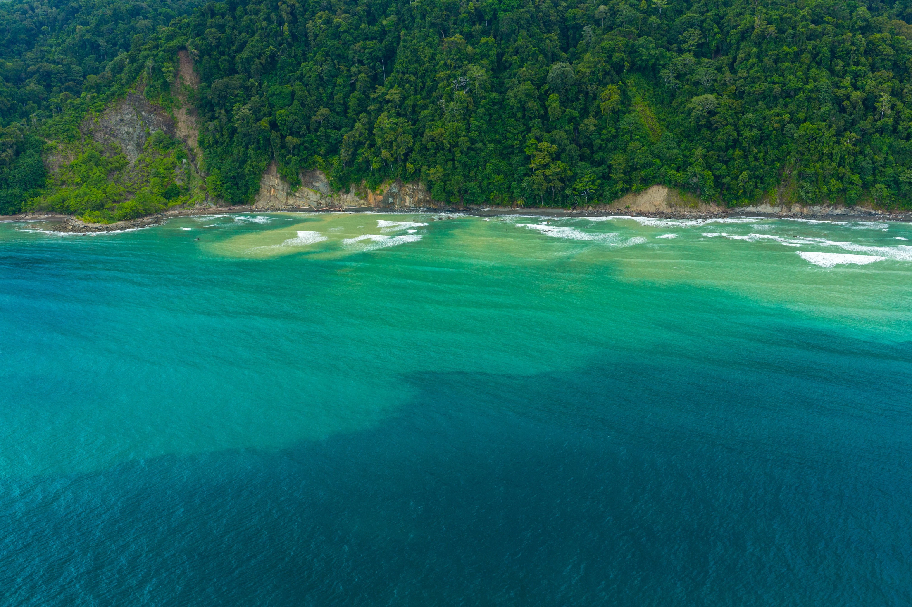

Reporte Anual 2025
Resumen completo de hitos de conservación, asignación financiera y resultados comunitarios para 2025.
Descargar
Explora recursos educativos, manuales de conservación, guías de campo y publicaciones que apoyan la protección ambiental y el desarrollo sostenible.
En la Fundación Corcovado creemos que la educación y el acceso al conocimiento son pilares fundamentales de la conservación efectiva. Nuestra Biblioteca Virtual reúne años de experiencia en el campo, investigación científica y aprendizaje comunitario en recursos que cualquier persona puede usar para comprender, proteger y restaurar uno de los lugares con mayor biodiversidad del planeta.
Manuales, herramientas y guías para educadores, estudiantes y líderes comunitarios. 12 recursos
Protocolos técnicos, guías de monitoreo y reportes de investigación de nuestro programa de 19 años. 8 recursos
Guías de reforestación, catálogos de especies nativas y documentos de metodología. 10 recursos
Publicaciones esenciales de nuestro centro de conocimiento.
Resumen completo de hitos de conservación, asignación financiera y resultados comunitarios para 2025.
Descargar
Guía completa para voluntarios que cubre logística, protocolos de seguridad, pautas culturales y expectativas del programa.
Descargar
Protocolos técnicos para monitoreo de nidos, liberación de crías y recolección de datos en el Pacífico de Costa Rica.
Descargar
Actividades prácticas, planes de lección y recursos visuales para enseñar conservación en escuelas rurales.
DescargarTodas las publicaciones disponibles para descarga.

Metodología paso a paso para reforestación nativa, monitoreo y mantenimiento a largo plazo en ecosistemas tropicales.
Descargar
Guía para agricultura sostenible, prácticas regenerativas y organización comunitaria en áreas rurales.
Descargar
Protocolos para estudios de biodiversidad, monitoreo ecológico y recolección de datos en áreas protegidas.
Descargar
Procedimientos operativos estándar para trabajo de campo, interacción con vida silvestre y respuesta a emergencias en Corcovado.
DescargarPautas para acceder y citar nuestras publicaciones.
Todos los recursos están disponibles gratuitamente para fines educativos, de investigación y no comerciales. Fomentamos compartirlos con escuelas, universidades y organizaciones de conservación.
Al usar nuestros materiales, cite: "Fundación Corcovado. [Año]. [Título del Documento]. Obtenido de [URL]". La atribución adecuada nos ayuda a continuar nuestro trabajo.
Todo el contenido es © Fundación Corcovado. El uso comercial requiere permiso por escrito. Contáctenos para consultas de licencias u oportunidades de asociación.
Cada donación nos ayuda a crear más recursos educativos, realizar más investigación y compartir más conocimiento con comunidades de todo el mundo.